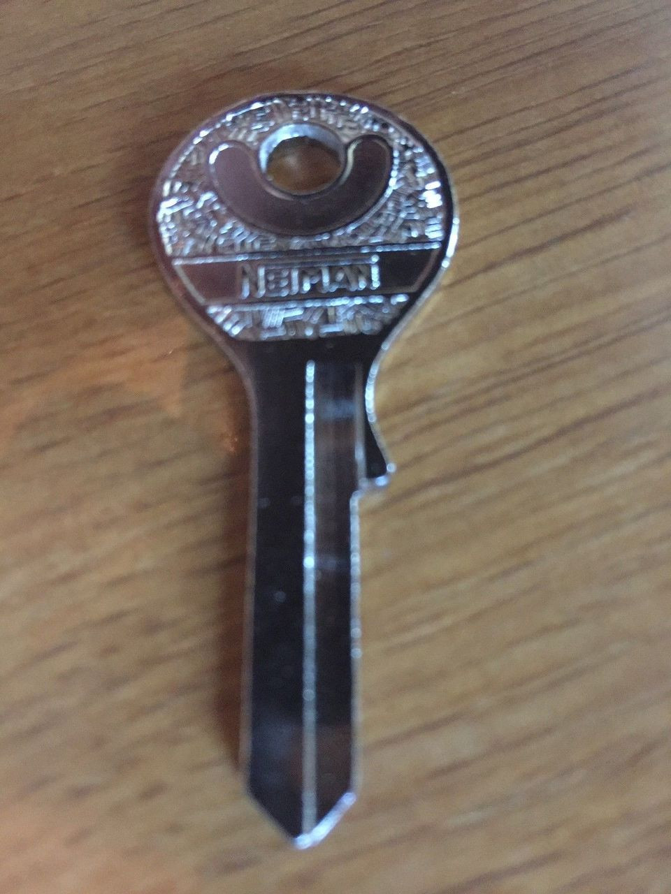

|  |
|---|
| RSE-016 |
RSE-016 is an ornate Neiman brand silver key resembling one mass manufactured in the early 1960s. RSE-016 has the unique ability to fit any lock with ease, and also functions when applied to digital locks. RSE-016 is able to be used up to five times per person. Any use after this limit will render the key useless to the subject carrying it.
On the fifth use of RSE-016, the opposite end of the door it has been applied to will instead redirect the subject to the kitchen of the nearest Popeyes restaurant location, being designated RSE-016-1 after use. It is impossible to record the formation of the passageway into RSE-016-1, and any subject who witnesses the event will not remember it thereafter. Only when the door to the passage created by RSE-016 is closed, will both sides return to normal function.
RSE-016 is held within a small locked steel case held in the Anomalous Objects Hall of Location 01. While not posing any immediate risk, it is unpredictable how staff will act within RSE-016-1, and could be hostile if provoked.